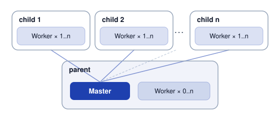
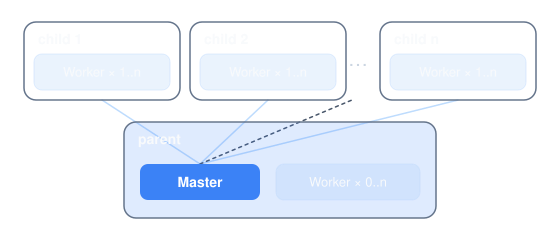

Multi-machine Julia over SSH
DistSSHKit
Install DistSSHKit once, then drive everything with julia -m DistSSHKit — prepare SSH hosts, run while you stay connected, or leave jobs on a queue host.
Prepare SSH hosts
Deploy your project and install deps on each remote before you run. Example: julia --project=. -m DistSSHKit setup --rsync child:user@host then julia --project=. -m DistSSHKit setup --instantiate child:user@host. Verify with julia --project=. -m DistSSHKit setup --check child:user@host. Walkthrough: Prepare · Reference: setup.
Run a script from this machine
Start the job here; SSH stays open until every slot finishes. Example: julia --project=. -m DistSSHKit go parent child:user@host SCRIPT.jl. Try the bundled demos: Demo · Reference: go (also drive and ride).
Leave a job on a queue host
Submit from your project directory; check and fetch later while your laptop is offline. Example: julia --project=. -m DistSSHKit qhost:HOST submit go parent:1 SCRIPT.jl, then julia --project=. -m DistSSHKit qhost:HOST status and julia --project=. -m DistSSHKit qhost:HOST fetch <id>. Path: First job · Reference: How it runs, submit, status, fetch.
DistSSHKit.jl
Install
Julia 1.13+ on macOS, Linux, or WSL2 Ubuntu (not native Windows).
pkg> add DistSSHKitYour machine also needs ssh and rsync, and git if you use git deploy — pkg> add does not install them. See Requirements.
How you operate it
DistSSHKit is one command, julia -m DistSSHKit, for everything on the home page tiles: host prep (setup, up), runs that start on this machine (go, drive, ride), and client verbs toward an always-on queue host (submit, status, fetch, … — How it runs).
- This machine — the SSH session from your laptop (or login node) stays up until the job finishes.
- Queue host — you leave the job on another machine; jobs run one at a time there so you can disconnect.
qhost:names that host on client commands.
Prepare hosts is shared: do setup (and match Julia with up) before either path.
Under the hood
pkg> add DistSSHKit pulls compatible DistSSHRun and DistSSHQueue; you normally talk to both only through julia -m DistSSHKit. The step-by-step manual on this site is the Kit manual (User Guide); Run and Queue also publish their own API references at the links above. Embedders who install Run or Queue without Kit: see Package split.
What is DistSSHKit?
Same script, three run styles on this machine:
go— each host runs the full script (default mental model).drive— one coordinator with Distributed.jl workers.ride— experimentalmap/filtersplit.
Host tokens look like parent:2, child:user@hostname:4. hostinfo and pool inspect machines before you pass tokens. More detail: User Guide, API.
Basic terms
- Host —
parent(this machine) orchild:user@hostname(SSH). - Process — one
juliaOS process; a run may start several per host. - Master / worker —
drivetopology only;gohas no master/worker split.
Example tokens:
parent # this machine
parent:2 # two slots on this machine
child:user@hostname # one slot on a remote
child:user@hostname:4 # four slots on that remoteEach SSH host needs passwordless SSH from where you start the run and a matching Julia major.minor (setup --check, up). More: Requirements.


The diagram is drive. go uses the same host tokens but each host runs the script independently.
Next
- Requirements
- Prepare → Demo →
setup/go/drive - Queue path: Prepare the machine → First job
Contributing
Bugs and feature requests: Issues. Questions: Discussions. CONTRIBUTING.md.
License
MIT.